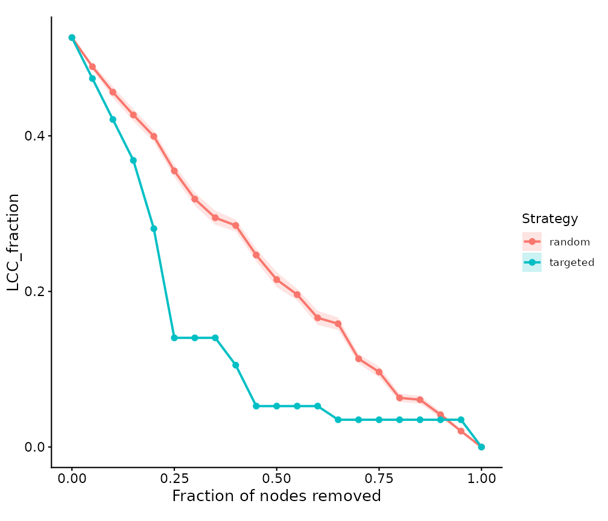
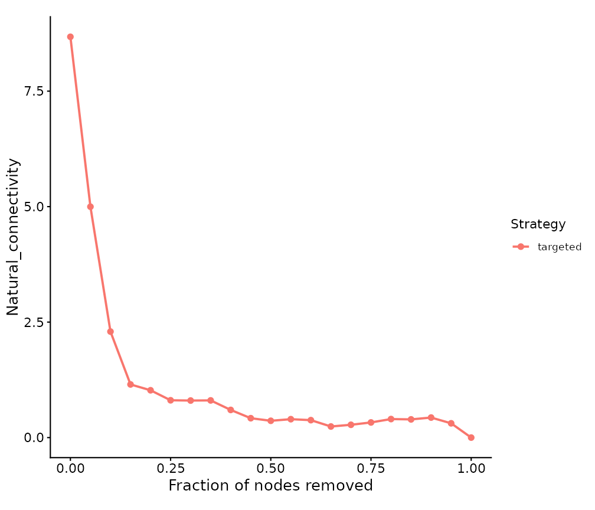
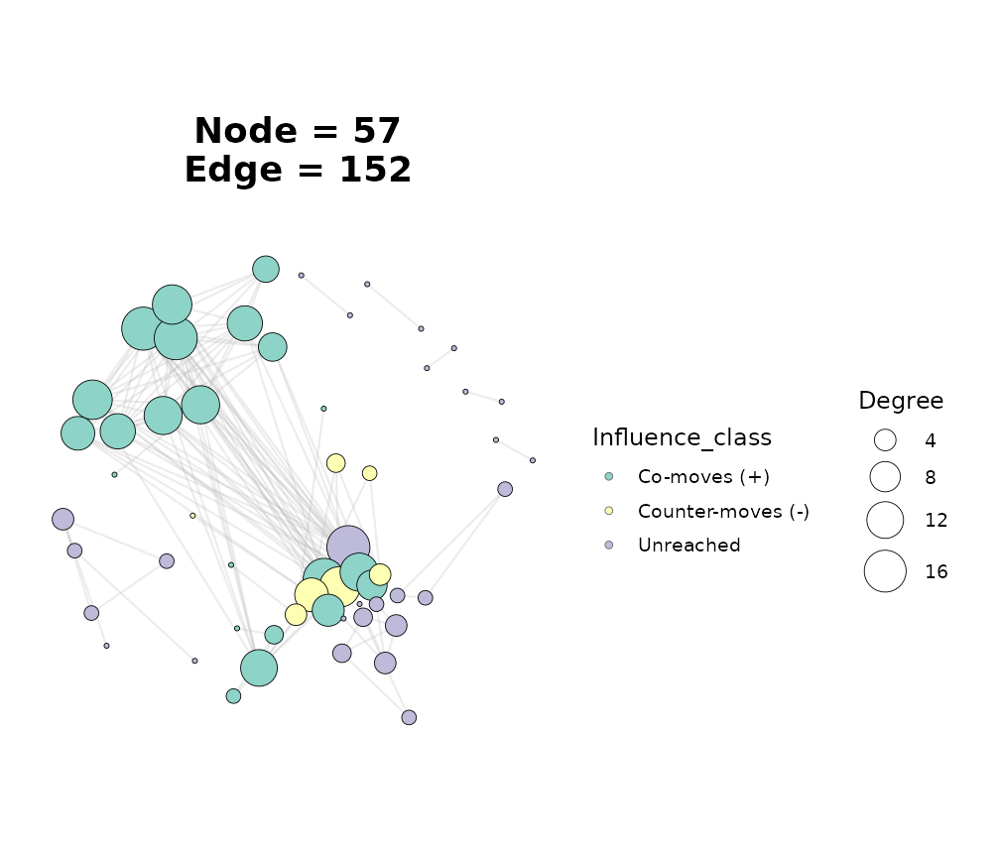

Overview
Once a network is built, a common question is what happens to it
under disturbance – if key taxa disappear, if one species is pushed
up or down, or if a whole module is lost. ggNetView groups
these “virtual perturbation” analyses into three functions that all take
a tbl_graph from any build_graph_from_*()
constructor:
| Function | Perturbation type | Question it answers |
|---|---|---|
get_network_perturbation() |
Structural (node/edge removal) | How fast does the network fall apart as nodes are lost? |
get_node_influence() |
Abundance-influence propagation | If I nudge one species, how far does the ripple reach? |
press_perturbation() |
Press (sustained-disturbance) approximation | If I keep suppressing/boosting a species, how does the community re-arrange? |
ggnetview_perturbation_curve() draws the attack curve
produced by the first function.
Interpretation caveat. Correlation / co-occurrence networks encode association, not causation, and have no edge direction. The structural analysis (type 1) depends only on topology and is robust. The influence (type 2) and press (type 3) analyses borrow ideas from dynamical ecology but use correlations as proxies for interaction strengths – read their output as qualitative scenarios, not quantitative predictions.
library(ggNetView)
#>
#> ░██ ░██
#> ░██
#> ░████████ ░████████ ░████████ ░███████ ░████████ ░██ ░██ ░██ ░███████ ░██ ░██ ░██
#> ░██ ░██ ░██ ░██ ░██ ░██ ░██ ░██ ░██ ░██ ░██ ░██░██ ░██ ░██ ░██ ░██
#> ░██ ░██ ░██ ░██ ░██ ░██ ░█████████ ░██ ░██ ░██ ░██░█████████ ░██ ░████ ░██
#> ░██ ░███ ░██ ░███ ░██ ░██ ░██ ░██ ░██░██ ░██░██ ░██░██ ░██░██
#> ░█████░██ ░█████░██ ░██ ░██ ░███████ ░████ ░███ ░██ ░███████ ░███ ░███
#> ░██ ░██
#> ░███████ ░███████
#>
#>
#> ggNetView: Reproducible and Deterministic Network Analysis and Visualization
#> Version: 0.2.1
#>
#> Authors: Yue Liu, Chao Wang
#> Maintainer: Yue Liu <yueliu@iae.ac.cn>
#>
#> Manual: https://jiawang1209.github.io/ggNetView-manual/
#> GitHub: https://github.com/Jiawang1209/ggNetView
#> Bug Reports: https://github.com/Jiawang1209/ggNetView/issues
#>
#> Type citation('ggNetView') for how to cite this package.1. Build a demo network
We reuse the bundled microbiome data and build a Spearman correlation network, exactly as in the topology vignette.
data(otu_rare_relative)
data(tax_tab)
mat <- as.matrix(otu_rare_relative)
mat <- mat[order(rowSums(mat), decreasing = TRUE)[seq_len(80)], ]
annot <- tax_tab[tax_tab$OTUID %in% rownames(mat), ]
g <- build_graph_from_mat(
mat = mat,
method = "cor",
cor.method = "spearman",
proc = "BH",
r.threshold = 0.6,
p.threshold = 0.05,
module.method = "Fast_greedy",
node_annotation = annot,
seed = 1
)
#> The max module in network is 11 we use the 11 modules for next analysis
g
#> # A tbl_graph: 57 nodes and 152 edges
#> #
#> # An undirected simple graph with 9 components
#> #
#> # Node Data: 57 × 14 (active)
#> name modularity modularity2 modularity3 Modularity Degree Strength Kingdom
#> <chr> <fct> <ord> <chr> <ord> <dbl> <dbl> <chr>
#> 1 ASV_10 1 1 1 1 17 13.1 Bacteria
#> 2 ASV_2 1 1 1 1 16 12.5 Archaea
#> 3 ASV_66 1 1 1 1 15 11.6 Bacteria
#> 4 ASV_44 1 1 1 1 13 9.90 Bacteria
#> 5 ASV_77 1 1 1 1 10 7.38 Bacteria
#> 6 ASV_64 1 1 1 1 9 6.53 Bacteria
#> 7 ASV_62 1 1 1 1 8 5.75 Bacteria
#> 8 ASV_33 1 1 1 1 4 3.26 Bacteria
#> 9 ASV_43 1 1 1 1 4 2.77 Bacteria
#> 10 ASV_32 1 1 1 1 3 2.36 Bacteria
#> # ℹ 47 more rows
#> # ℹ 6 more variables: Phylum <chr>, Class <chr>, Order <chr>, Family <chr>,
#> # Genus <chr>, Species <chr>
#> #
#> # Edge Data: 152 × 5
#> from to weight correlation corr_direction
#> <int> <int> <dbl> <dbl> <chr>
#> 1 27 31 0.750 0.750 Positive
#> 2 28 31 0.730 0.730 Positive
#> 3 2 17 0.783 0.783 Positive
#> # ℹ 149 more rows2. Structural perturbation: random failure vs targeted attack
get_network_perturbation() removes nodes step by step
and recomputes a panel of connectivity metrics after each removal. The
headline metric is LCC_fraction – the size of the largest
connected component relative to the original network – and the
single-number summary is the Schneider R-index (area
under the LCC curve; higher = more robust).
The most informative comparison is random failure against targeted attack (removing the most-connected nodes first):
rnd <- get_network_perturbation(
g, strategy = "random", bootstrap = 30, seed = 1, plot = FALSE
)
tgt <- get_network_perturbation(
g, strategy = "targeted", centrality = "degree", plot = FALSE
)
rbind(rnd$robustness_index, tgt$robustness_index)
#> strategy R_index
#> 1 random 0.2347257
#> 2 targeted 0.1453634A lower R-index under targeted attack is the classic signature of a scale-free-like network: it tolerates random loss but is fragile to the deliberate removal of hubs.
Overlay both curves with the companion plotting helper:
ggnetview_perturbation_curve(rbind(rnd$curve, tgt$curve))
#> Warning: Removed 21 rows containing missing values or values outside the scale range
#> (`geom_ribbon()`).
You can target any centrality ("degree",
"strength", "betweenness",
"closeness", "eigenvector", or
"ivi"), and the curve table also carries
Natural_connectivity, Efficiency,
Modularity and more, so you can plot a different
metric:
ggnetview_perturbation_curve(tgt$curve, metric = "Natural_connectivity")
Knocking out a specific module or node set
Instead of a fraction sweep, you can remove a named module (a level
of the Modularity column) or an explicit set of nodes and
read the before/after change:
mods <- levels(get_graph_nodes(g)$Modularity)
ko <- get_network_perturbation(g, strategy = "module", target = mods[1])
ko$curve[ko$curve$metric %in% c("LCC_fraction", "N_components"), ]
#> strategy fraction metric value value_sd value_se
#> 1 module 0.000000 LCC_fraction 0.5263158 NA NA
#> 2 module 0.000000 N_components 9.0000000 NA NA
#> 9 module 0.245614 LCC_fraction 0.2807018 NA NA
#> 10 module 0.245614 N_components 9.0000000 NA NA3. Abundance-influence propagation
get_node_influence() injects a virtual perturbation at
one or more source nodes and lets it diffuse along the (signed) weighted
edges, returning a per-node Influence score. Positive vs
negative values distinguish neighbours that move with vs against the
source.
hub <- get_graph_nodes(g) |>
dplyr::arrange(dplyr::desc(Degree)) |>
dplyr::pull(name) |>
head(1)
g_infl <- get_node_influence(g, source = hub)
get_graph_nodes(g_infl) |>
dplyr::arrange(dplyr::desc(abs(Influence))) |>
dplyr::select(name, Modularity, Degree, Influence) |>
head(8)
#> name Modularity Degree Influence
#> 1 ASV_41 2 17 0.07055545
#> 2 ASV_2 1 16 0.06542196
#> 3 ASV_39 2 17 0.06525645
#> 4 ASV_73 2 14 0.06224600
#> 5 ASV_66 1 15 -0.05980907
#> 6 ASV_44 1 13 0.05866859
#> 7 ASV_6 2 14 0.05639881
#> 8 ASV_17 2 13 0.05530194Because the score is stored as a node column, you can map it onto a
network figure. ggNetView()’s node_fill
aesthetic uses a discrete scale, so bin the signed influence into a
small categorical column first:
g_infl <- g_infl |>
tidygraph::activate(nodes) |>
tidygraph::mutate(Influence_class = dplyr::case_when(
Influence > 0 ~ "Co-moves (+)",
Influence < 0 ~ "Counter-moves (-)",
TRUE ~ "Unreached"
))
ggNetView(g_infl, layout = "fr", node_fill = "Influence_class")
4. Press perturbation (sustained disturbance)
press_perturbation() treats the signed correlation
matrix as a proxy community matrix \(A\), adds negative self-regulation on the
diagonal, and inverts it to get the net-effect matrix \(N = -A^{-1}\). Entry \(N_{ij}\) is the long-run net response of
species \(i\) when species \(j\) is held under sustained pressure.
The diagonal is chosen automatically to guarantee a dynamically stable matrix, and stability is reported:
pp <- press_perturbation(g)
c(stable = pp$stable,
eigen_real_max = round(pp$eigen_real_max, 3),
self_regulation = round(pp$self_regulation, 3))
#> stable eigen_real_max self_regulation
#> 1.000 -1.000 -11.103Query the consequences of continuously pressing the hub species – the nodes with the largest absolute response are the ones most affected:
pp_hub <- press_perturbation(g, source = hub)
head(pp_hub$response, 8)
#> name net_response
#> 1 ASV_10 0.16032271
#> 15 ASV_41 0.08101214
#> 16 ASV_39 0.07794091
#> 2 ASV_2 0.07336664
#> 18 ASV_73 0.07210790
#> 17 ASV_6 0.07207952
#> 19 ASV_17 0.06951217
#> 20 ASV_60 0.06885498A positive net_response means that species tends to
increase when the source is boosted (and decrease when it is
suppressed); a negative value means the opposite.
Where to go next
-
vignette("network-topology")– static topology and Zi-Pi keystone roles, the natural companion to the perturbation analyses here. -
vignette("node-importance")– per-node centralities and the integrated influence (IVI) score, which can drive the"ivi"targeted attack above.